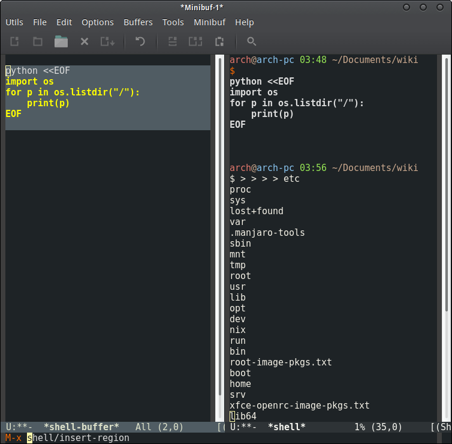
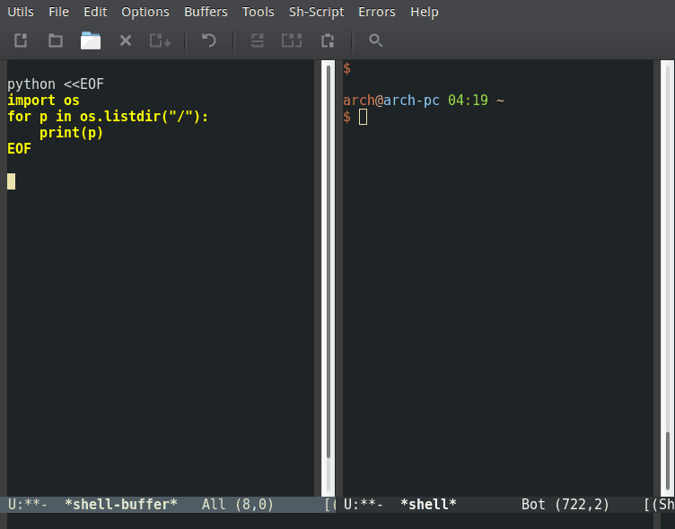

Elisp Snippets
Table of Contents
- 1. Elisp Snippets
- 1.1. Strings
- 1.2. S-expressions
- 1.3. Clipboard (Kill-ring) elisp clipboard kill ring
- 1.4. Elisp
- 1.5. Common Lisp Emulation Library
- 1.6. Buffer and regions
- 1.7. IO - Input and Output
- 1.8. Shell Commands / Interacting with external applications
- 1.8.1. Related Documentation
- 1.8.2. Synchronous Shell Commands
- 1.8.3. Pipe a region to external command terminal shell command pipe interface
- 1.8.4. Launch apps in Asynchronous mode
- 1.8.5. Run asynchronous commands piping the output to a buffer
- 1.8.6. Run a ncurses / terminal app inside Emacs
- 1.8.7. Run apps in external terminal emulator terminal shell os command
- 1.8.8. Launch applicatiosn from Emacs
- 1.8.9. Send regions, commands and buffer to M-x shell repl.
- 1.9. File
- 1.10. Directory directory
- 1.11. Dired mode snippets directory dired
- 1.11.1. Overview
- 1.11.2. Copy path of file at point
- 1.11.3. Paste a file from clibpboard
- 1.11.4. Create empty file (touch)
- 1.11.5. Open multiple marked files
- 1.11.6. Close multiple marked files
- 1.11.7. Open a file with default system application dired file open system
- 1.11.8. Close all dired buffers
- 1.11.9. Browse bookmarked directories dired directory helm browse
- 1.11.10. Filter dired buffer by file extensions
- 1.11.11. Filter dired buffer by regex
- 1.11.12. Open directory at point with Microsoft Explorer in Windows OS.
- 1.12. Text Manipulation
- 1.13. Emacs Introspection
- 1.14. Web Browser http web browser
- 1.15. Http Requests http request url network
- 1.16. Interface
- 1.17. Packages package install library
- 1.18. Helm Snippets framework library helm
- 1.18.1. Switch between buffers in same directory
- 1.18.2. Browser Recent files
- 1.18.3. Browser Recent directories
- 1.18.4. Launch ansync shell command with helm
- 1.18.5. Switch between buffers associated with files
- 1.18.6. Switch between Emacs major modes
- 1.18.7. Open a list of web sites
- 1.18.8. Interface Makefile
- 1.19. Persistence
- 1.20. Non categorized
- 2. IELM - Inferior Emacs Lisp Mode
- 3. Emacs Server and Client
- 4. Org-mode
- 5. Selected Gists and Source Codes
1 Elisp Snippets
1.1 Strings
1.1.1 Concatenate strings
> (concat "hello" " world") "hello world" > (concat "hello" " world" " elisp ") "hello world elisp " > (apply #'concat '("hello" " world " " elisp ")) "hello world elisp "
1.1.2 Join Strings by Separator
(defun join (sep lst) (mapconcat 'identity lst sep)) ELISP> (join "," '("1.232" "300" "500")) "1.232,300,500" ELISP> (join ", " '("1.232" "300" "500")) "1.232, 300, 500"
1.1.3 Split String
> (split-string "100,200,300,400" ",") ("100" "200" "300" "400") > (split-string (getenv "PATH") ":") ("/usr/local/sbin" "/usr/local/bin" "/usr/bin" ...)
1.1.4 Split String with quotes
> (split-string-and-unquote "/bin/app -x -y -z \"/home/user/some name with space/etc\" -k cmd ") ("/bin/app" "-x" "-y" "-z" "/home/user/some name with space/etc" "-k" "cmd")
1.1.5 Replace Strings
1.1.6 Regex
1.2 S-expressions
1.2.1 Parse s-expressions
;; Exaluate with M-x eval-print-last-sexp > (read "(mapc (lambda (p) (insert p) (insert \"\n\")) (buffer-list)) ") (mapc (lambda (p) (insert p) (insert " ")) (buffer-list)) > (read "(+ 1 2 3 4)") (+ 1 2 3 4)
1.2.2 Evaluate s-expressions
> (eval (read "(+ 1 2 3 4)" ))
10
> (eval '(+ 1 2 3 4))
10
1.3 Clipboard (Kill-ring) elisp clipboard kill ring
1.3.1 Copy string to clipboard
(defun clipboard/set (astring) "Copy a string to clipboard" (with-temp-buffer (insert astring) (clipboard-kill-region (point-min) (point-max))))
1.3.2 Paste string from clipboard
(defun clipboard/get () "Return the content of clipboard as string" (interactive) (with-temp-buffer (clipboard-yank) (buffer-substring-no-properties (point-min) (point-max))))
1.3.3 Copy buffer file name to clibpoard
(defun buffer/copy-file-name () (interactive) (clipboard/set (buffer-file-name))) ;; Eval using M-x eval-print-last-sexp ;; > (buffer/copy-file-name) nil > (insert (clipboard/get)) /home/arch/projects/emacs/Emacs_Snippets.org
1.3.4 Copy buffer directory to clibpoard
(defun buffer/copy-path () (interactive) (clipboard/set (file-name-directory (buffer-file-name))) (message "Copied file path to clipboard") ) ;; Eval using M-x eval-print-last-sexp ;; > (buffer/copy-path) "Copied file path to clipboard" > (clipboard/get) "/home/arch/projects/emacs/"
1.3.5 Copy buffer content to clipboard
(defun buffer/copy-content () " Copy buffer content to clibpoard Usage: M-x buffer/copy-content " (interactive) (clipboard/set (buffer-substring-no-properties (point-min) (point-max) )))
1.4 Elisp
1.4.1 Load an Elisp file
Load an elisp source file *.el.
(load-file "~/.emacs.d/tools.el")
Load an byte-compiled (*.elc) elisp file.
(load-file "~/.emacs.d/tools.elc")
1.4.2 Load all elisp files of a directory
(defun load-dir (path) " Load all elisp files (*.el) of a directory Usage: (load-dir <path>) Example: (load-dir \"~/.emacs.d/custom\") " (mapc #'load (directory-files path t "\\.el$")))
1.4.3 Add directory to load path
It adds a directory containing Emacs packages (<package name>.el) to
the load path. The user can load packages by adding the code (require '<package>)
to the file init.el.
(add-to-list 'load-path "~/.emacs.d/custom") ;; package -> ~/.emacs.d/custom/package.el ;; (require 'package)
1.4.4 Switch and Create the Scratch Buffer
This function switches and crates the scratch buffer if it doesn't exist or was deleted. Usage: M-x scratch.
(defun scratch () " Switches to scratch buffer and creates it if it doesn't exist. Usage: M-x scratch This function is useful to Elisp developers. Suggestion: Add (defalias 's #'scratch) to the init file. You can switch to the scratch buffer with > M-x s " (interactive) (let ((buf (get-buffer-create "*scratch*"))) (switch-to-buffer buf) (lisp-interaction-mode) )) (defalias 's #'scratch)
1.4.5 Eval String in Clipboard
It only works on Linux and requires Xclip to be installed, but with a few changes can be tweaked to work in another Os.
ELISP> (defun eval-string (str) (eval (read str))) eval-string ELISP> (defun eval-xclip () (eval-string (shell-command-to-string "xclip -o"))) eval-xclip ;; ;; Copy the following line in this comment block ;; ;; (message "Loading my copypaste file...") ELISP> (eval-xclip) "Loading my copypaste file..." ELISP>
1.4.6 Extract Function Documentation elisp
Source: Generate emacs-lisp documentation Primitives:
ELISP> ELISP> (defun sample-function (a b c) "Function Docstring" (+ a (* 5 b) (* 3 c))) ;; Extract Documentation ;; ELISP> (documentation 'sample-function) "Function Docstring" ;; Extract Code ;; ELISP> (symbol-function 'sample-function) (lambda (a b c) "Function Docstring" (+ a (* 5 b) (* 3 c))) ;; Extract Arguments ELISP> (help-function-arglist 'sample-function) (a b c)
Final Code
(fun2org 'sample-function)
"** sample-function (a b c)\nFunction Docstring\n\n#+BEGIN_SRC emacs-lisp\n(lambda (a b c) \"Function Docstring\" (+ a (* 5 b) (* 3 c)))\n#+END_SRC\n"
ELISP>
ELISP> (defun fun2org (function-symbol)
(let ((args (help-function-arglist function-symbol))
(doc (documentation function-symbol))
(code (symbol-function function-symbol)))
(print (format "** %s %s
%s
#+BEGIN_SRC emacs-lisp
%S
" function-symbol args doc code)))) ;; End of fun2org
ELISP> (fun2org 'sample-function) "** sample-function (a b c) Function Docstring (lambda (a b c) \"Function Docstring\" (+ a (* 5 b) (* 3 c))) "
1.5 Common Lisp Emulation Library
1.5.1 Reduce (fold left) function
- Build a number from a list of digits
(require 'cl) ELISP> (cl-reduce (lambda (acc x) (+ (* 10 acc) x)) '(1 2 3 4 5 6) :initial-value 0) 123456 (#o361100, #x1e240)
- Test if all values of a list are true
(require 'cl) ELISP> (cl-reduce (lambda (acc x) (and acc x)) '(t nil t t t f) :initial-value t) nil ELISP> (cl-reduce (lambda (acc x) (and acc x)) '(t t t t t f) :initial-value t) f ELISP> (cl-reduce (lambda (acc x) (and acc x)) '(t t t t t t) :initial-value t) t (defun all-p (bool-list) "Tests if all values of bool-list are true (not nil)" (cl-reduce (lambda (acc x) (and acc x)) bool-list :initial-value t)) ELISP> (all-p '(t t t)) t ELISP> (all-p '(t nil t)) nil
- Test if at least one value of a list is true
ELISP> (cl-reduce (lambda (acc x) (and acc x)) '(t t t t t t) :initial-value t) t ELISP> (cl-reduce (lambda (acc x) (or acc x)) '(t t t t t t) :initial-value nil) t ELISP> (cl-reduce (lambda (acc x) (or acc x)) '(nil nil nil t t nil) :initial-value nil) t ELISP> (cl-reduce (lambda (acc x) (or acc x)) '(nil nil nil nil nil nil) :initial-value nil) nil ELISP> () (defun some-p (bool-list) "Tests if at least one value bool-list is true (not nil)" (cl-reduce (lambda (acc x) (or acc x)) bool-list :initial-value nil)) ELISP> (some-p '(t t t t)) t ELISP> (some-p '(nil t nil nil)) t ELISP> (some-p '(nil nil nil nil)) nil
1.6 Buffer and regions
1.6.1 Save buffer
(save-buffer)
1.6.2 Get buffer content as string
Returns the content of a buffer referencend by its name or the buffer object.
(defun buffer-content (&optional buffer-or-name) (with-current-buffer (if buffer-or-name buffer-or-name (current-buffer)) (buffer-substring-no-properties (point-min) (point-max) )))
1.6.3 Get selected text as string
Returns the selected text of the current buffer.
(defun get-selection () "Get the text selected in current buffer as string" (interactive) (buffer-substring-no-properties (region-beginning) (region-end)))
1.6.4 Creating a scratch buffer for Programming Languages
This function creates a Python scratch buffer like elisp *scratch*
which allows the user to play with Python without creating any
file. It is possible to run
It can be easily changed to work with other languages like ruby by replacing python-mode to ruby-mode.
Python Scratch buffer
Usage: M-x python/scratch
(defun python/scratch () (interactive) (let ( ;; Creates a new buffer object. (buf (get-buffer-create "*python-scratch*")) ) ;; Executes functions that would change the current buffer at ;; buffer buf (with-current-buffer buf ;;; Set the new buffer to scratch mode (python-mode) ;;; Pop to scratch buffer (pop-to-buffer buf) )))
Shell (bash, sh) scratch buffer
Usage: M-x sh/scratch
(defun sh/scratch () (interactive) (let ( ;; Creates a new buffer object. (buf (get-buffer-create "*sh-scratch*")) ) ;; Executes functions that would change the current buffer at ;; buffer buf (with-current-buffer buf ;;; Set the new buffer to scratch mode (sh-mode) ;;; Pop to scratch buffer (pop-to-buffer buf) )))
1.7 IO - Input and Output
1.7.1 Input - Read User Input
- Prompt functions
Function Description read-string Read input as string read-file-name Read input as file name read-directory-name Read input as path to directory read-regexp Read input as regular expression read-passwd Read password read-shell-command Read a shell command. read-command Read an M-x elisp command returning a symbol. read-envvar-name Read environment variable read-key Read a key from the keyboard. read-key-sequence Read a sequence of keystrokes and return as a string or vector. read-number Read a numeric value read-regexp Read regular expression returning it as string. - Read string
> (read-string "prompt > ") ;; M-x eval-print-last-sexp "user enter some string in minibuffer"
Ask the user for a string and insert in the buffer
> (insert (concat "\n" (read-string " prompt > " ))) ;; M-x eval-last-sexp user enter a message in the minibuffer
- Read file name
Reads a file name from the user and gives auto completion. Enter tab to autocomplete the file name.
> (read-file-name "Enter a file name: ") ;; M-x eval-print-last-sexp "/etc/fstab"
- Read file name and insert at point
Opens a prompt that asks for the path in the minibuffer with completion and inserts the path at the current point.
- Usage: M-x insert-path
(defun insert-path () " Opens a prompt that asks for the path in the minibuffer with completion and inserts the path at the current point. Usage: M-x insert-path " (interactive) (insert (read-file-name "file > ")))
- Read a directory path
> (read-directory-name "Enter a directory: ") ;; M-x eval-print-last-sexp "/var/log"
1.7.2 Output
- Message
Display a message at the bottom of the screen.
(message "A message to the user")
- Print
- Princ
- Message box
Display a message, in a dialog box if possible. If a dialog box is not available, use the echo area.
(message-box "Emacs Alert. Time to drink a coffee!")
- Tooltip
Show a tooltip
(tooltip-show "An Emacs tooltip")
1.8 Shell Commands / Interacting with external applications
1.8.1 Related Documentation
[C-h-f] <name of function>
- shell-command
- async-shell-command
- start-process
- call-process
- shell-command-to-string
- shell-command-on-region
- getenv
- setenv
1.8.2 Synchronous Shell Commands
- Display output of shell command
(shell-command "uname -a") ;; M-x eval-last-sexp

- Display output of shell command in another frame shell command frame
Display PCI cards in another frame.
(with-selected-frame (make-frame) (shell-command "lspci"))
- Shell Command To String shell string
> (shell-command-to-string "uname -a") ;; M-x eval-print-last-sexp "Linux localhost 4.7.0-1-ARCH #1 SMP PREEMPT Mon Aug 8 22:05:58 CEST 2016 x86_64 GNU/Linux " > (insert (format "\nKernel version %s " (shell-command-to-string "uname -r"))) ;; M-x eval-last-sexp Kernel version 4.7.0-1-ARCH nil (defun insert-debug-info () (interactive) (insert (concat "Kernel version : ") (shell-command-to-string "uname -r")) (insert (concat "Linux distribution : ") (shell-command-to-string "cat /etc/issue")) (insert (concat "Gcc version :") (shell-command-to-string "gcc --version | grep GCC")) ) ;; M-x insert-debug-info Kernel version : 4.7.0-1-ARCH Linux distribution : Arch Linux \r (\l) Gcc version :gcc (GCC) 6.1.1 20160802
- Shell Command Wrappers
The function shell-command-to-lines runs a shell command and returns the output lines. This function is useful to create shell command wrappers over Unix shell commands like find.
(defun shell-command-to-lines (command) (remove-if-not (lambda (s) (/= (length s) 0)) (split-string (shell-command-to-string command) "\n"))) ELISP> (mapc #'princ (shell-command-to-lines "ls /var/log")) btmpfailloghttpdjournallastlogoldpacman.logsambaspeech-dispatcherwtmpXorg.0.logXorg.0.log.old ("btmp" "faillog" "httpd" "journal" "lastlog" "old" "pacman.log" "samba" "speech-dispatcher" "wtmp" "Xorg.0.log" "Xorg.0.log.old") ELISP> (mapc (lambda (p) (princ p) (princ "\n")) (shell-command-to-lines "ls /var/log")) btmp faillog httpd journal lastlog old pacman.log samba speech-dispatcher wtmp Xorg.0.log Xorg.0.log.old
Example: Shell command wrapper find
ELISP> (mapc (lambda (p) (princ p) (princ "\n")) (shell-command-to-lines "find ~/.local/share/ -name \"*.desktop\"")) /home/arch/.local/share/xfce4/helpers/custom-WebBrowser.desktop /home/arch/.local/share/applications/userapp-mono-IAJQMY.desktop /home/arch/.local/share/applications/userapp-sh-9VFBMY.desktop /home/arch/.local/share/applications/userapp-em-FLD8LY.desktop /home/arch/.local/share/applications/userapp-mpv-FLQ9LY.desktop /home/arch/.local/share/applications/userapp-Firefox-SOBHMY.desktop (defun search-files (directory pattern) (shell-command-to-lines (format "find %s -name '%s'" directory pattern))) ELISP> (search-files "~/.local" "*.desktop") ;; Output changed to fit in the screen ("/home/arch/.local/share/xfce4/helpers/custom-WebBrowser.desktop" "/home/arch/.local/share/applications/userapp-mono-IAJQMY.desktop" "/home/arch/.local/share/applications/userapp-sh-9VFBMY.desktop" "/home/arch/.local/share/applications/userapp-em-FLD8LY.desktop" ... ) ELISP> (mapc (lambda (p) (princ p) (princ "\n")) (search-files "~/.local" "*.desktop")) /home/arch/.local/share/xfce4/helpers/custom-WebBrowser.desktop /home/arch/.local/share/applications/userapp-mono-IAJQMY.desktop /home/arch/.local/share/applications/userapp-sh-9VFBMY.desktop /home/arch/.local/share/applications/userapp-em-FLD8LY.desktop /home/arch/.local/share/applications/userapp-mpv-FLQ9LY.desktop /home/arch/.local/share/applications/userapp-Firefox-SOBHMY.desktop
1.8.3 Pipe a region to external command terminal shell command pipe interface
- Pipe buffer or region to external command
Pipes the buffer content to external command and print the output in the buffer
*Shell Command Output*. The command$ wc -lcounts the number of line of the current file.> (shell-command-on-region (point-min) (point-max) "wc -l") ;; M-x eval-last-sexp
Pipes the buffer content to external command
$wc -land get the output as a string.> (with-output-to-string ;; M-x eval-print-last-sexp (shell-command-on-region (point-min) (point-max) "wc -l")) "" (defun pipe-region-to-command (pmin pmax command) (interactive) (shell-command-on-region pmin pmax command "*shell-output*" ) (let ( (output (with-current-buffer "*shell-output*" (buffer-substring-no-properties (point-min) (point-max)))) ) (kill-buffer "*shell-output*") output ) ) > (pipe-region-to-command (point-min) (point-max) "wc -l") ;; M-x eval-print-last-sexp "1515 "
- Apply an external command to buffer
The command below will pipe the buffer
*scratch*to the command =$ sed 's/foo.*/bar/g'= which replaces all values of foo for bar.(with-current-buffer "*scratch*" (shell-command-on-region (point-min) (point-max) "sed 's/foo.*/bar/g'" "*shell-output*" t ) ) ;; M-x eval-last-sexp
Before the form evaluation

After the form evaluation.

- Function to apply an external command to buffer
Usage: M-x shell-command-on-buffer Enter: sed 's/defun/defn/g' eplaces all defun words by defn.
(defun shell-command-on-buffer (&optional command) "Apply a shell command in the current buffer and replace it by the command output. Example: - Interactive usage: M-x shell-command-on-buffer Enter: sed 's/defun/defn/g'. replaces all defun words by defn. - (shell-command-on-buffer \"sed 's/defun/defn/g'\") " (interactive) (shell-command-on-region (point-min) (point-max) (if command command (read-string "Cmd on buffer: ")) "*shell-output*" t ) )
- Insert line number in all lines of a buffer using ruby
Enter M-x shell-command-on-buffer and then $ ruby -ne 'printf("-%6s%s", $., $_)'
ruby -ne 'printf("-%6s%s", $., $_)'Before running the command:

After running the command:

- Ruby command on buffer
This function applies a ruby batch command on the buffer.
See also: Ruby One-Liners
(defun ruby-on-buffer (&optional command) " Applies a ruby command on buffer Example: The command will number each line of the current buffer. 1. M-x ruby-on-buffer 2. type: 'printf(\"%6s%s\", $., $_)' without quotes. " (interactive) (shell-command-on-buffer (format "ruby -ne '%s'" (if command command (read-string "ruby cmd >")))))

- Ruby regex on buffer
Emacs regexp islimited and doesn't have lookahead like perl or ruby regex. This command can extend the functionality of Emacs regex using ruby. This function applies a ruby regex on the buffer.
Usage: M-x ruby-gsub-on-buffer
See also: Ruby One-Liners
(defun ruby-gsub-on-buffer (&optional regexp) " Applies ruby regex, the command $ ruby -pe 'gsub(regexp)' on the current buffer. Usage M-x ruby-gsub-on-buffer (ruby-gsub-on-buffer <regexp>) Example: The Command replace all occurrences of 'defun' by 'defn'. 1. M-x ruby-gsub-on-buffer 2. Type /defun/,\"defn\" " (interactive) (shell-regexp-on-buffer (format "ruby -pe 'gsub(%s)'" (if regexp regexp (read-string "ruby regex: ")))))
1.8.4 Launch apps in Asynchronous mode
1.8.5 Run asynchronous commands piping the output to a buffer
- Ping a host
(start-process NAME BUFFER PROGRAM &rest PROGRAM-ARGS
Usage: M-x ping-host or (ping-host <hostname>)
(defun ping-host (&optional hostname) " Ping a hostname. Usage: - Interactive: M-x ping-host - Command: (ping-host <hostname>) Example: (ping-host \"www.google.com\") (ping-host \"192.168.0.1\") " (interactive) (let ( (hostname- (if hostname hostname (read-string "host to ping: "))) ) ;; (with-selected-frame (make-frame) ;; ;; ;; ;; Process name: ping ;; ;; Process buffer: *ping* ;; ;; Command: ping <hostname> ;; ;; ;; (start-process "ping" "*ping*" "ping" hostname-) ;; ) (start-process "ping" "*ping*" "ping" hostname-) (switch-to-buffer-other-frame "*ping*") ))

- Tracerote a host
(defun traceroute-host (&optional hostname) " Ping a hostname. Usage: - Interactive: M-x traceroute-host [Enter the hostname] - Command: (traceroute-host <hostname>) Example: (traceroute-host \"www.yahoo.co.uk\") " (interactive) (let ( (hostname- (if hostname hostname (read-string "host to traceroute: "))) ) (start-process "traceroute" "*traceroute*" "traceroute" hostname-) (switch-to-buffer-other-frame "*traceroute*") ))
1.8.6 Run a ncurses / terminal app inside Emacs
Run linux htop (task manager) inside Emacs:
(term "htop") ;; C-x C-e or M-x eval-last-sexp

1.8.7 Run apps in external terminal emulator terminal shell os command
Some Linux ncurses-based applications like Htop, Top, Nmtui (Network
Manager's terminal UI) doesn't work well running in Emacs terminal
emulator M-x term or M-x ansi-term. The solution is run the
command from Emacs and send to an external terminal emulator.
Read a command in launch in terminal
This command uses xfce4-terminal but it can be changed to any other terminal emulator.
(defun run-terminal () "Launch application in a terminal emulator." (interactive) (start-process "termx" nil ;; Change this for your terminal. "xfce4-terminal" "-e" (read-shell-command "Shell: ") ))
Launch specific commands
(defun shell-command-in-terminal (command) (start-process "termx" nil ;; Change this for your terminal. "xfce4-terminal" "-e" command ))
To launch htop:
(shell-command-in-terminal "htop")
To launch nmtui:
(shell-command-in-terminal "nmtui")
Command M-x htop to launch htop.
(defun htop () "Launch htop task manager." (interactive) (shell-command-in-terminal "htop"))
1.8.8 Launch applicatiosn from Emacs
This command asks the user a shell command providing tab completion and launches an asynchronous process (it doesn't freeze Emacs). Unlike asynchronous-shell-command this command doesn't create a new buffer. It is useful to launch desktop GUI applications from Emacs like Firefox, terminal emulator, file mangers and so on.
Note: In order to this command find the app the directory of the app must be in the $PATH variable.
(defun shell-launch () "Launch a process without creating a buffer. It is useful to launch apps from Emacs." (interactive) (let* ((cmd-raw (read-shell-command "Launch command: ")) (cmd-args (split-string-and-unquote cmd-raw)) (cmd (car cmd-args)) ;; program that will run (args (cdr cmd-args))) ;; command arguments (apply #'start-process `(,cmd nil ,cmd ,@args ))))
This comamnd can be bound to a keybiding with the code bellow that bidns the key combination SUPER (Windows Key) + 8.
(global-set-key (kbd "s-8") #'shell-launch)
1.8.9 Send regions, commands and buffer to M-x shell repl.
- M-x shell/buffer-repl This command deletes all other windows and splits the current frame into two windows one containing a M-x shell (bash) repl and the other a shell-script scratch buffer (sh-mode).
- M-x shell/buffer-repl-frame Like the shell/buffer-repl, but shell and the scratch buffer are displayed in new frame.
(defun shell/buffer-repl () "Create " (interactive) (delete-other-windows) ;; Split window vertically (split-window-right) ;;; Run shell (bash on Linux) (shell) ;;; Creates a scratch-shell buffer on other half of window (let ((buf (get-buffer-create "*shell-buffer*"))) (with-current-buffer buf (sh-mode) (pop-to-buffer buf)))) (defun shell/buffer-repl-frame () (interactive) (with-selected-frame (make-frame) (shell/buffer-repl)))
This functions are useful to send regions, lines and regions to M-x shell repl
from a shell-buffer or shell scratch buffer to the repl.
(defun shell/send-region () "Send selected text to M-x shell repl." (interactive) (comint-send-region (get-buffer-process "*shell*" ) (region-beginning) (region-end)) (comint-send-string (get-buffer-process "*shell*" ) "\n")) (defun shell/insert-region () "Insert selected text into M-x shell repl and run it." (interactive) (let ((text (buffer-substring-no-properties (region-beginning) (region-end) ))) (with-current-buffer "*shell*" (insert text) (comint-send-input) ))) (defun shell/send-line () "Send current line to M-x shell repl." (interactive) (comint-send-region (get-buffer-process "*shell*") (line-beginning-position) (line-end-position) ) (comint-send-string (get-buffer-process "*shell*" ) "\n")) (defun shell/insert-line () "Insert current line to M-x shell repl." (interactive) (let ((line (buffer-substring-no-properties (line-beginning-position) (line-end-position) ))) (with-current-buffer "*shell*" (insert line) (comint-send-input) ))) (defun shell/execute-line () "Execute current line as shell command." (interactive) (shell-command (buffer-substring (line-beginning-position) (line-end-position)))) (defun shell/execute-region () "Execute current region as shell command." (interactive) (shell-command (buffer-substring (region-beginning) (region-end)))) (defun shell/insert-buffer () "Insert all buffer content into M-x shell repl and run it." (interactive) (let ((text (buffer-substring-no-properties (point-min) (point-max) ))) (with-current-buffer "*shell*" (insert text) (comint-send-input) )))
Example:
- User runs M-x shell/buffer-repl-frame. It will open a frame like in the picture bellow.
- User select the region with some code and runs M-x shell/insert-region. It will send the current region to the shell repl and display the output, in this case the content of root directory.

Figure 12: Example of M-x shell/buffer-repl-frame.

Figure 13: Demonstration of M-x shell/buffer-repl-frame and shell/insert-region
1.9 File
1.9.1 Test if file or directory exists
> (file-exists-p "/var/log/pacman.log") ;; M-x eval-print-last-sexp t > (file-exists-p "/var/log/pcaman.log.err") nil ;; > (file-exists-p "/var/log") t ;; > (file-exists-p "/var/log-dont-exists") nil
1.9.2 Expand file name
ELISP> (expand-file-name "~") "/home/arch" ELISP> (expand-file-name "~/.emacs.d/init.el") "/home/arch/.emacs.d/init.el" ELISP> (expand-file-name ".") "/home/arch/projects/emacs"
1.9.3 Read file to string
The Emacs API doesn't provide a straightforward way to read file directly to a string. The only way to perform this taks is using a temporary buffer.
(defun read-file (filename) (with-temp-buffer (insert-file-contents filename) (buffer-substring-no-properties (point-min) (point-max)))) ELISP> (read-file "/etc/host.conf") "#\n# /etc/host.conf\n#\n\norder hosts,bind\nmulti on\n\n# End of file\n" ELISP> (princ (read-file "/etc/host.conf")) # # /etc/host.conf # order hosts,bind multi on # End of file
1.9.4 Open file to edit
1.9.5 Open file to edit silently
Function: find-file-nonselect
Emacs Documentation: Read file FILENAME into a buffer and return the buffer.If a buffer exists visiting FILENAME, return that one, but verify that the file has not changed since visited or saved. The buffer is not selected, just returned to the caller.
Open a file and returns a buffer:
> (setq b1 (find-file-noselect "~/.bashrc")) #<buffer .bashrc> > b1 #<buffer .bashrc>
1.9.6 Edit File as Root utils edit
(defun open-as-root (filename) (interactive) (find-file (concat "/sudo:root@localhost:" filename))) ;; Example: ;; ELISP> (open-as-root "/etc/host.conf") ;; ;; ;; Open an already opened buffer as root ;; ;; M-x open-buffer-as-root ;; (defun open-buffer-as-root () (interactive) (let ( ;; Get the current buffer file name (filename (buffer-file-name (current-buffer))) ;; Get the current file name (bufname (buffer-name (current-buffer))) ) (progn (kill-buffer bufname) ;; Kill current buffer (open-as-root filename)))) ;; Open File as root
1.10 Directory directory
1.10.1 Open directory

1.10.2 Create directory
1.10.3 List directory
Get directory content
ELISP> (directory-files "/var/log") ("." ".." "Xorg.0.log" "Xorg.0.log.old" ... )
Print the directory content in elisp shell IEML.
ELISP> (mapc #'(lambda (p) (princ (concat "\n" p))) (directory-files "/var/log") ) . .. Xorg.0.log Xorg.0.log.old btmp faillog httpd journal lastlog old pacman.log samba speech-dispatcher wtmp
Get directory content with absolute file name.
ELISP> (directory-files "/var/log" t) ("/var/log/." "/var/log/.." "/var/log/Xorg.0.log" "/var/log/Xorg.0.log.old" ... ) ELISP> (mapc #'(lambda (p) (princ (concat "\n" p))) (directory-files "/var/log" t )) /var/log/. /var/log/.. /var/log/Xorg.0.log /var/log/Xorg.0.log.old /var/log/btmp ...
List files of a specific extension:
;; Files ending with *.conf ELISP> (directory-files "/etc/" nil "\\.conf") ("asound.conf" "dhcpcd.conf" "fuse.conf" "gai.conf" ...) ELISP> (directory-files "/etc/" t "\\.conf") ("/etc/asound.conf" "/etc/dhcpcd.conf" "/etc/fuse.conf" ...) ELISP> (directory-files "/etc/" t "\\.cfg") ("/etc/rc_maps.cfg" "/etc/vdpau_wrapper.cfg") ELISP> (directory-files "/etc/" nil "\\.cfg") ("rc_maps.cfg" "vdpau_wrapper.cfg")
1.11 Dired mode snippets directory dired
1.11.1 Overview
The dired mode is the mode used by Emacs to browser directories.
See also: How do you customize dired?
Source: hiroina/.emacs
1.11.2 Copy path of file at point
- Copy path of file at point.
(defun dired-copy-path () "In dired, copy file path to kill-buffer. At 2nd time it copy current directory to kill-buffer." (interactive) (let (path) (setq path (dired-file-name-at-point)) (if (string= path (current-kill 0 1)) (setq path (dired-current-directory))) (message path) (kill-new path) ) )
1.11.3 Paste a file from clibpboard
This command pastes a file which path is stored in clibpoard.
Usage:
- Copy file from clibpoard with Emacs or from system's default file manager.
- M-x dired-paste-file-from-clipboard
(defun dired-paste-file-from-clipboard () "Paste a file from clpboard to current directory." (interactive) (flet ((clipboard-get () (with-temp-buffer (clipboard-yank) (buffer-substring-no-properties (point-min) (point-max))))) (copy-file (clipboard-get) ".") (revert-buffer)))
1.11.4 Create empty file (touch)
- Create empty file at current directory opened in dired mode.
(defun dired-touch () "Creates empty file at current directory." (interactive) (append-to-file "" nil (read-string "New file: ")) (if (equal major-mode 'dired-mode) (revert-buffer) ))
1.11.5 Open multiple marked files
(defun dired-open-files (files) " Open all marked files in dired mode with m. Usage: 1. Mark the files with m 2. M-x dired-open-files " (interactive (list (dired-get-marked-files)) ) (mapc #'find-file files) )
1.11.6 Close multiple marked files
(setq lexical-binding t) (defun compose (fn1 fn2) (let ((lexical-binding t)) (lambda (x) (funcall fn2 (funcall fn1 x)) ) )) (defun dired-close-files (files) (interactive (list (dired-get-marked-files)) ) (mapc (compose #'get-file-buffer #'kill-buffer) files) )
1.11.7 Open a file with default system application dired file open system
Usage. Select a file in dired mode and enter M-x dired-xdg
Function: xdg-open. Open any file with system's default application.
(defun xdg-open (filename) "Open a file FILENAME with default system application. This function is operating system independent." (cl-case system-type ;;; Linux (gnu/linux (let ((process-connection-type nil)) (start-process "proc" nil ;; Command "xdg-open" (expand-file-name filename)))) ;;; Free BSD OS (gnu/kfreebsd (let ((process-connection-type nil)) (start-process "proc" nil ;; Command "xdg-open" (expand-file-name filename)))) ;; Mac OSX - (Not tested ) (darwing (start-process "proc" nil ;; Command "open" (concat (expand-file-name filename)))) ;; Windows 7, 8, 10 - Kernel NT (windows-nt (start-process "proc" nil ;; Command "cmd" "/C" "start" "" (expand-file-name filename) ) )))
Function: dired-xdg
(defun dired-xdg () "Open file at point with systems' default app. Usage: In the dired mode select a file and type M-x dired-xdg to execute the file with the system default app. " (interactive) (with-current-buffer (xdg-open (dired-get-filename))))
1.11.8 Close all dired buffers
(defun dired-close-all () "Close all dired buffers." (interactive) (mapc (lambda (buf) (if (equal (buffer-local-value 'major-mode buf) 'dired-mode) (kill-buffer buf))) (buffer-list)))
1.11.9 Browse bookmarked directories dired directory helm browse
The function M-x dired-bookmarks opens a helm menu where the user
can select its favorites directories. It provides quick directory
navigation.
(defvar dired-bookmarks-path-list '("~" "~/Desktop" "~/Downloads" "~/Documents" "~/Documents/projects" "~/Documents/wiki" "/tmp" ;"/mnt/transfer" "/var/log" "/etc" "/etc/init.d" "~/.config" "~/.local" "~/.local/share" "~/.emacs.d" )) (defun dired-bookmarks () "Open a directory by selecting it in Helm menu." (interactive) (helm :prompt "Bookmarks: " :sources `(( (name . "Bookmark: ") (candidates . dired-bookmarks-path-list) (action . dired) ))))
1.11.10 Filter dired buffer by file extensions
Usage:
- M-x dired/filter-extension
- Enter the extensions to filter separated by space like: 'html js ccp'
- It will only show files matching this extensions. To view all files type g.
(defun dired/filter-extension () "Filter dired buffer by file extensions. Usage: 1. M-x dired/filter-extension 2. Enter the file extensions separated by space like: exe dll It will only show files ending with extensions *.exe and *.dll. To show all files of dired buffer again type 'g'." (interactive) (dired-mark-files-regexp (mapconcat 'identity (mapcar (lambda (ext) (format "\\.%s$" ext)) (split-string (read-string "Extension: "))) "\\\|" )) (dired-toggle-marks) (dired-do-kill-lines))
The key (') quote can be used to invoke this command:
;; Filter files by extension (define-key dired-mode-map "'" #'dired/filter-extension)
1.11.11 Filter dired buffer by regex
This command only displays files matching the given regex (Emacs' regex).
Example: By entering M-x dired/filter '\.pdf$' without quotes it will only show file names ending with .pdf. To display all files again type 'g'.
(defun dired/filter () "Show only files which name matches a regex." (interactive) (dired-mark-files-regexp (read-regexp "Regex: ")) (dired-toggle-marks) (dired-do-kill-lines))
1.11.12 Open directory at point with Microsoft Explorer in Windows OS.
(defun dired-exec-explorer () "In dired, execute Explorer" (interactive) (let (path) (setq path (dired-file-name-at-point)) (setq path (replace-regexp-in-string "~" "c:/home" path)) (setq path (replace-regexp-in-string "/" "\\\\" path)) (message path) ;(kill-new path) (start-process "explorer" nil "explorer" (concat "/select," path)) ) )
1.12 Text Manipulation
1.12.1 Text alignment
Source: Init file - www.svjatoslav.eu
(defun align-to-colon (begin end) "Align region to colon (:) signs" (interactive "r") (align-regexp begin end (rx (group (zero-or-more (syntax whitespace))) ":") 1 1 )) (defun align-to-comma (begin end) "Align region to comma signs" (interactive "r") (align-regexp begin end (rx "," (group (zero-or-more (syntax whitespace))) ) 1 1 )) (defun align-to-equals (begin end) "Align region to equal signs" (interactive "r") (align-regexp begin end (rx (group (zero-or-more (syntax whitespace))) "=") 1 1 )) (defun align-to-hash (begin end) "Align region to hash ( => ) signs" (interactive "r") (align-regexp begin end (rx (group (zero-or-more (syntax whitespace))) "=>") 1 1 )) ;; work with this (defun align-to-comma-before (begin end) "Align region to equal signs" (interactive "r") (align-regexp begin end (rx (group (zero-or-more (syntax whitespace))) ",") 1 1 ))
1.12.2 Join Multiple Lines
From: jidaikobo-shibata/join-multi-lines-to-one.el
(defun join-multi-lines-to-one () "Join multi lines." (interactive) (let ((beg (region-beginning)) (end (region-end)) strings) (goto-char beg) (back-to-indentation) (setq beg (point)) (goto-char end) (goto-char (- (point) 1)) (end-of-line) (setq end (point)) (setq strings (buffer-substring-no-properties beg end)) (setq strings (replace-regexp-in-string "\n\\|^>+ *\\|^[\t ]+" " " strings)) (setq strings (replace-regexp-in-string " +" " " strings)) (delete-region beg end) (insert strings) (goto-char beg)))
1.13 Emacs Introspection
1.13.1 User init file
ELISP> user-init-file "/home/arch/.emacs.d/init.el" ELISP> (expand-file-name user-init-file) "/home/arch/.emacs.d/init.el"
1.13.2 User Emacs Directory
ELISP> user-emacs-directory "~/.emacs.d/" ELISP> (expand-file-name user-emacs-directory) "/home/arch/.emacs.d/"
1.13.3 Enviroment Variables
1.13.4 Get current Operating System
1.13.5 Test if Emacs is running in terminal or in window system
The variable window-system is the name of window system through which the selected frame is displayed.
Its value is a symbol:
- nil for a termcap frame (a character-only terminal)
- 'x' for an Emacs frame that is really an X window
- 'w32' for an Emacs frame that is a window on MS-Windows display
- 'ns' for an Emacs frame on a GNUstep or Macintosh Cocoa display
- 'pc' for a direct-write MS-DOS frame.
(defun test-window-system () (interactive) (if window-system (message "Running in Window System / GUI") (message "Running in terminal ") )) ;; In GUI ;;----------------------------- > (test-window-system) ;; M-x eval-print-last-sexp "Running in Window System / GUI" ;; In Terminal ;;------------------------------ > (test-window-system) ;; M-x eval-print-last-sexp "Running in terminal "
1.14 Web Browser http web browser
1.14.1 Browse Url
Open http://www.yandex.com in the web browser
> (browse-url "http://www.yandex.com")
Function to open Yandex.com. Usage M-x open-yandex
(defun open-yandex () "Open the web site http://www.yandex.com" (interactive) (browse-url "http://www.yandex.com") )
1.14.2 Browser Url setting the web browser
Open url with firefox
(let ((browse-url-browser-function 'browse-url-firefox)) (browse-url "http://www.yandex.com")) ;; Or ;; Set browser permanently (setq browse-url-browser-function 'browse-url-firefox)
Open url with chromium browser or chrome
(let ((browse-url-browser-function 'browse-url-chromium)) (browse-url "http://www.yandex.com")) ;;; Or ;; Set browser permanently (setq browse-url-browser-function 'browse-url-chromium)
Open url with Emacs eww browser
(let ((browse-url-browser-function 'eww-browse-url)) (browse-url "http://www.yandex.com") ;;; Or ;; Set browser permanently (setq browse-url-browser-function 'eww-browse-url)
1.14.3 Search Web sites with Emacs
- Search google
Usage: M-x search-google
(require 'url-util) (defun search-google () (interactive) "Search www.google.ca" (browse-url (format "http://www.google.ca?gws_rd=ssl#q=%s" (url-encode-url (read-string "Google: ")))))
- Search a specific url site with google
Usage:
- M-x search-hackernews-with-google
- M-x search-reddit-with-google
- M-x search-stackoverflow-with-gooogle
Usage: M-x search-google (require 'url-util) (defun search-google-url (url params) (let ((google-url (format "site:%s %s" url params))) (browse-url (format "http://www.google.ca?gws_rd=ssl#q=%s" (url-encode-url google-url))))) (search-google-url "https://news.ycombinator.com" "haskell production") (defun search-hackernews-with-google () (interactive) (search-google-url "https://news.ycombinator.com" (read-string "Hnews: "))) (defun search-reddit-with-google () (interactive) (search-google-url "https://www.reddit.com" (read-string "Reddit: "))) (defun search-stackoverflow-with-google () (interactive) (search-google-url "http://stackoverflow.com" (read-string "S.O Search: ")))
- Search github
(require 'url-util) (defun search-github () (interactive) "Search www.google.ca" (browse-url (format "https://github.com/search?q=%s" (url-encode-url (read-string "Github Search: ")))))
- Search gisthub
(require 'url-util) (defun search-gisthub () " Search gisthub : http://gist.github.com Usage: M-x search-gisthub " (interactive) (browse-url (format "https://gist.github.com/search?p=50&q=%s&ref=searchresults" (url-encode-url (read-string "Gisthub Search: ")))))
- Open Emacs Web Manual
(defun open-emacs-manual () " Open Emacs online Manual Usage: M-x open-emacs-manual It opens the web site: https://www.gnu.org/software/emacs/manual " (interactive) (browse-url "https://www.gnu.org/software/emacs/manual/"))
1.14.4 Browser Inside Emacs
Emacs Provides a built-in lightweight web browser eww browser that can be used to quick access web sites in terminal or Emacs GUI.
Open a Url with eww-browser:
M-x eww <url>
(eww-browse-url "http://m.reddit.com/r/emacs")
Open a html file with eww-browser
M-x eww-open-file <file-name>
It is useful to view html documentation inside Emacs.
(eww-open-file "/some/html/file.html")
Key Bindings
| Key Binding | Description |
|---|---|
| C-h m | Show all keybindings of eww-mode |
| q | Quit eww browser |
| Return/Enter | Open url at point |
| Tab | Jump to next hyperlink |
| C-A i | Jump to previous hyperlink |
| Space | Scrow Down |
| Esc | Scrow Up |
| w | Copy page Url |
| l | Go to previous page |
| n | Got to next page |
| g | Update/ Refresh |
To load web sites faster use mobile url. Some suggestions:
Google Search
http://www.google.com/m?q=<query>- Country/Culture sensitive searchhttp://www.google.ca/m?q=<query>- Country/Culture insensitive search, always English.
Google News:
- http://www.gooogle.com/m/news - Country/Culure sensitive
- http://www.google.ca/m/news - Canada News
Arch Linux Wiki
Wikipedia
Hackernews
See the browser http request:
1.15 Http Requests http request url network
1.15.1 Download File http web download
(url-copy-file <url> <filename>)
(url-copy-file "http://www.httpbin.org/get" "/tmp/output") (find-file "/tmp/output")
1.15.2 url-retrieve-synchronously http web download sync
(url-retrieve-synchronously URL &optional SILENT INHIBIT-COOKIES)
Example:
(with-current-buffer (url-retrieve-synchronously "http://www.httpbin.org/get") (buffer-substring-no-properties (point-min) (point-max)))
Output:
HTTP/1.1 200 OK
Server: nginx
Date: Fri, 23 Sep 2016 23:44:21 GMT
Content-Type: application/json
Content-Length: 304
Connection: keep-alive
Access-Control-Allow-Origin: *
Access-Control-Allow-Credentials: true
{
"args": {},
"headers": {
"Accept": "*/*",
"Accept-Encoding": "gzip",
"Extension": "Security/Digest Security/SSL",
"Host": "www.httpbin.org",
"Mime-Version": "1.0",
"User-Agent": "URL/Emacs"
},
"origin": "179.176.152.199",
"url": "http://www.httpbin.org/get"
}
1.15.3 Download a file interactively http web download file
This function downloads a file from the url copied to clipboard and then asks the user to which file the data will be downloaded suggesting the file name extracted from the url.
This function updates the current buffer (revert buffer) if executed in a dired buffer (directory).
Testing the function:
- 1. Copy the url: https://raw.githubusercontent.com/nybbles/kaggle/master/train.csv
- 2. M-x download-url-to-file
- 3. View file in current directory.
C-x dto open it.
Usage: M-x download-url-to-file
(defun download-url-to-file () "Download a file from a URL in the clibpoard. This command asks the user for the url suggesting the url stored in the clipboard and then asks the user for the file name to be downloaded suggesting the file name extracted from the url. " (interactive) (let* ;; Get the URL suggestion from clibpoard ((text (with-temp-buffer (clipboard-yank) (buffer-substring-no-properties (point-min) (point-max)))) ;; Ask the user to confirm the url (url (read-string "Url: " text))) (url-copy-file url ;; Get file name. (read-file-name "File name: " (car (last (split-string url "/"))))) (when (equal major-mode 'dired-mode) (revert-buffer))))
1.15.4 Download a file and display it on a buffer http web buffer clipboard
This command reads an url from the user and download the file content and displays it on a buffer without write a file to disk.
Example:
- User copies the url: (file: iterator-theory.cs)
http://patterns.cs.up.ac.za/examples/ch9/iterator-theory.cs - User enters the command
M-x download-code-view - It will suggest in a prompt the former url. User hit return.
- It download the code and displays it on a buffer iterator-theory.cs
- User enter the command. M-x csharp-mode that turns on the syntax hightlight.
(defun download-code-view () "Download a source code from url and displays it on a buffer." (interactive) (let* ( ;; Get url from clipboard (clipboard (with-temp-buffer (clipboard-yank) (buffer-substring-no-properties (point-min) (point-max)))) ;; Read url and suggesting clipboard (url (read-string "Url: " clipboard)) (buf (url-retrieve-synchronously url)) ;; Tries to extract the file name from url (filename (car (last (split-string url "/")))) (bufname (concat "*" filename "*")) ) (switch-to-buffer buf) ;; Remove http header (goto-char (point-min)) (re-search-forward "^$") (delete-region (point) (point-min)) (kill-whole-line) ;; Remove \r characters or ^M (replace-string (char-to-string 13) "") ;; Rename buffer to a better name (with-current-buffer buf (rename-buffer bufname))))
1.15.5 Http and Post Request utils connections http
(defun url-http-post (url args) "Send ARGS to URL as a POST request." (let ( (response-string nil) (url-request-method "POST") (url-request-extra-headers '(("Content-Type" . "application/x-www-form-urlencoded"))) (url-request-data (mapconcat (lambda (arg) (concat (url-hexify-string (car arg)) "=" (url-hexify-string (cdr arg)))) args "&"))) (switch-to-buffer (url-retrieve-synchronously url)) (goto-char (point-min)) (re-search-forward "\n\n") (setq response-string (buffer-substring-no-properties (point) (point-max))) (kill-buffer (current-buffer)) response-string)) (defun url-http-get (url args) "Send ARGS to URL as a GET request." (let ( (response-string nil) (url-request-method "GET") (url-request-data (mapconcat (lambda (arg) (concat (url-hexify-string (car arg)) "=" (url-hexify-string (cdr arg)))) args "&"))) (switch-to-buffer (url-retrieve-synchronously (concat url "?" url-request-data))) (goto-char (point-min)) (re-search-forward "\n\n") (setq response-string (buffer-substring-no-properties (point) (point-max))) (kill-buffer (current-buffer)) response-string)) ELISP> (princ (url-http-get "http://httpbin.org/get" nil)) { "args": {}, "headers": { "Accept": "*/*", "Accept-Encoding": "gzip", "Content-Length": "0", "Extension": "Security/Digest Security/SSL", "Host": "httpbin.org", "Mime-Version": "1.0", "User-Agent": "URL/Emacs" }, "origin": "167.103.159.147", "url": "http://httpbin.org/get" } ELISP> (princ (url-http-post "http://httpbin.org/post" '(("use" . "dummy") ("pass" . "something else") ("code" . "pxyz0011213")))) { "args": {}, "data": "", "files": {}, "form": { "code": "pxyz0011213", "pass": "something else", "use": "dummy" }, "headers": { "Accept": "*/*", "Accept-Encoding": "gzip", "Content-Length": "48", "Content-Type": "application/x-www-form-urlencoded", "Extension": "Security/Digest Security/SSL", "Host": "httpbin.org", "Mime-Version": "1.0", "User-Agent": "URL/Emacs" }, "json": null, "origin": "167.103.159.147", "url": "http://httpbin.org/post" }
1.16 Interface
1.16.1 Creating Quick Access Menu


(require 'easymenu) (easy-menu-define djcb-menu global-map "Utils" '("Utils" ("Shells" ;; submenu ["Ielm - Emacs Lisp Shell" (ielm)] ["Eshell - Emacs Buitin Shell" (eshell)] ["Native Shell " (shell)] ["---------------------" nil] ["Edit .bashrc" (find-file "~/.bashrc")] ["Edit .profile" (find-file "~/.profile")] ["Edit .Xresources" (find-file "~/.Xresources")] ["Edit .xsessin" (find-file "~/.xsession")] ["See all GNU MAN pages" ( info)] ["See a specific Man Page" (woman)] );; End of shells menu ("Emacs /Elisp" ;; submenu ["Ielm - Emacs Lisp Shell" (ielm)] ["Eval buffer" ( eval-buffer ) ] ["---------------------" nil] ["Edit init.el" (find-file user-init-file)] ["Reload init.el" (load-file user-init-file)] ["Open .emac.d dir" (find-file "~/.emacs.d")] ["List packages" (list-packages)] ["Install package" (package-install)] ) ;; End of Emacs / Elisp submenu )) ;; End of Custom Menu
1.17 Packages package install library
1.17.1 Test if package is installed
If the package is installed returns t (true) and nil otherwise.
(package-installed-p PACKAGE &optional MIN-VERSION)
> (package-installed-p 'helm-core) t
1.17.2 Install a package if it is not installed
1.17.3 Install a single-file package from URL
This command install a single-file elisp package from a given URL to source file.
Usage:
- Copy the url of the package file to be installed like http://mumble.net/~campbell/emacs/paredit-beta.el from EmacsWiki:Par Edit.
- Type M-x package-install-url It will ask to confirm the URL. Then type return and the package will be installed.
To find where the package was intalled type M-x find-library <library-name>.
(defun package-install-url () "Install a single-file package *.el file from Url." (interactive) (let* ( ;; Suggest the URL stored in the clipboard (clipboard (with-temp-buffer (clipboard-yank) (buffer-substring-no-properties (point-min) (point-max)))) ;; Ask the user to confirm the url (url (read-string "Url: " clipboard)) ) (with-current-buffer (url-retrieve-synchronously url) (goto-char (point-min)) (re-search-forward "^$") (delete-region (point) (point-min)) (kill-whole-line) (package-install-from-buffer))))
1.18 Helm Snippets framework library helm
1.18.1 Switch between buffers in same directory
Usage: M-x buffer/switch-in-directory
This command switches between buffer with files that are in current directory.
(defun buffer/with-file-in-directory-p (directory buf) "Check if a buffer has file associated and is is in DIRECTORY. Parameters: - directory string - root directory - buf buffer object - buffer object" (and (buffer-file-name buf) ;; check if buffer has a file associated (string-prefix-p (expand-file-name directory) (expand-file-name (buffer-file-name buf) )))) (defun buffer/switch-in-directory () "Switch between buffers in same directory." (interactive) (helm :prompt "Buffer switch: " :sources `(( (name . "Dir: ") (candidates . ,(mapcar (lambda (b) (cons (buffer-name b) b)) ;; filter buffers not in this directory (code bellow) (remove-if-not (lambda (b) (buffer/with-file-in-directory-p (or (file-name-directory (buffer-file-name)) default-directory ) b )) (buffer-list) ))) (action . switch-to-buffer) ))))
1.18.2 Browser Recent files
Usage: M-x helm-recent-files
(require 'helm) (defun helm-recent-files () (interactive) (helm :prompt "File: " :sources `(( (name . "File: ") (candidates . ,recentf-list) (action . find-file) ))))

1.18.3 Browser Recent directories
Usage M-x helm-recent-dirs
(require 'helm) (defun unique (xs) "Remove repeated elements from list xs Example: > (unique '(x y a b 21 21 10 21 x y a )) (x y a b 21 10) " (let ((result nil)) (dolist (x xs) (if (not (member x result)) (push x result) )) (reverse result) )) (defun helm-recent-dirs () (interactive) (helm :prompt "Dir: " :sources `(( (name . "Dir: ") (candidates . (lambda () (unique (map #'file-name-directory recentf-list)))) (action . dired) ))))
1.18.4 Launch ansync shell command with helm
This piece of code gets all executables in the $PATH variable and searche for one that matches the user input and then launches it. It is useful to launch applications without block Emacs.
Usage: M-x helm-laucher
(defun get-executables () " Returns a list of all files available in the directories of the $PATH variable. " (apply #'append (mapcar (lambda (p) (directory-files p t)) (remove-if-not #'file-exists-p (split-string (getenv "PATH") ":"))))) (defun run-async (&optional command) "Run a shell command in asynchronous mode. It doesn't block Emacs while the command is running. Usage: (run-async \"python -m http.server\") M-x run-async -> User enters a command. " (interactive) (apply #'start-process `( "proc-any" ;; We don't care about the application name nil ;; Don't name the buffer ,@(split-string-and-unquote (if command command (read-string "Command: " ) )) ))) (defun run-async-lst (&rest commands) " Run a shell command in asynchronus mode, not blocking Emacs. Usage: > (run-async-lst <program> <argument 1> <agurment2> ...) Example: > (run-async \"thunar\" \"/usr/share/applications\") " (apply #'start-process `( "dontcare" ;; We don't care about the application name nil ;; Don't name the buffer ,@commands ))) (defun helm-launcher () " Launches applications available in $PATH directories in asynchronous mode without Emacs wait for it. Usage M-x heml-launcher " (interactive) (let ((data (mapcar (lambda (p) (cons (file-name-nondirectory p) p )) (get-executables) ) )) (helm :prompt "Shell: " :sources `(( (name . "Shell: ") (candidates . ,data) (action . run-async) )))))

1.18.5 Switch between buffers associated with files
Switch between buffers associated with files.
(defun switch-file () " Switch between buffers that are associated with files. Depends on helm. Usage: M-x switch file. " (interactive) (let ((data (mapcar (lambda (b) (cons (buffer-file-name b) b )) (remove-if-not #'buffer-file-name (buffer-list))))) (helm :prompt "Buffer: " :sources `(( (name . "File Buffers") (candidates . ,data) (action . switch-to-buffer) ))) ))
1.18.6 Switch between Emacs major modes
(defun helm-switch-mode () " Switch between all major programming modes available in Emacs. Usage: M-x helm-switch-mode " (interactive) (cl-flet ((unique (xs) (let ((result nil)) (dolist (x xs) (if (not (member x result)) (push x result) )) (reverse result) ) )) (helm :prompt "Mode: " :sources `(( (name . "Emacs Major Modes") (candidates . ,(unique (mapcar #'symbol-name (remove-if-not #'symbolp (mapcar #'cdr auto-mode-alist))))) (action . ,(lambda (m) (funcall (intern-soft m)))) ))) ) )
1.18.7 Open a list of web sites
(setq helm-url-default-url-list '( ("google" . "http://www.google.ca") ("yandex" . "http://www.yandex.com") ("reddit" . "http://www.reddit.com") ("/r/haskell". "http://www.reddit.com/r/haskell") ("/r/emacs" . "http://www.reddit.com/r/emacs") ("/r/csharp" . "http://www.reddit.com/r/csharp") ) ) (defun helm-web () (interactive) (helm :prompt "Web Site: " :sources `(( (name . "Bookmarks") (candidates . helm-url-default-url-list) (action . (lambda (c) (browse-url (cdr c))) ) ))) )
1.18.8 Interface Makefile
This command extracts the build tasks from a Makefile and shows it as a helm menu where the user can select the task to be executed. It will be run as a asynchronous process.
Usage: M-x helm-make
Version1:
;; Taken from: http://emacs.stackexchange.com/questions/7148/get-all-regexp-matches-in-buffer-as-a-list (defun re-seq (regexp string) "Get a list of all regexp matches in a string" (save-match-data (let ((pos 0) matches) (while (string-match regexp string pos) (push (match-string 0 string) matches) (setq pos (match-end 0))) matches))) (defun helm-make () (interactive) (let ((tasks (re-seq "^\\w+" (with-temp-buffer (insert-file "Makefile") (buffer-substring-no-properties (point-min) (point-max) ))))) (helm :prompt "Makefile task: " :sources `(( (name . "Task") (candidates . ,tasks) (action . (lambda (task) (start-process "make" "*make*" "make" task ))) ))) (switch-to-buffer "*make*")))
Version2: Remove dependency re-seq.
(defun helm-make2 () (interactive) (flet ((re-seq2 (regexp string) (save-match-data (let ((pos 0) matches) (while (string-match regexp string pos) (push (match-string 0 string) matches) (setq pos (match-end 0))) matches)))) (let ((tasks (re-seq2 "^\\w+" (with-temp-buffer (insert-file "Makefile") (buffer-substring-no-properties (point-min) (point-max) ))))) (helm :prompt "Makefile task: " :sources `(( (name . "Task") (candidates . ,tasks) (action . (lambda (task) (start-process "make" "*make*" "make" task ))) ))) (switch-to-buffer "*make*"))))
Example: Assuming that the current directory has the Makefile with content. The command M-x helm-make will show the tasks all, html, browse and clean.
all: html html: mkdir -p dist emacs --batch -q -l build.el --kill mv dist/README.html dist/index.html cp -r -v images dist/images cp -r *.org dist/ browse: firefox dist/index.html clean: rm -rf dist/*.html dist/*.html~
1.19 Persistence
1.19.1 Save and Reload Current Session
Interactive Developement
ELISP> (defun file-contents (filename) (interactive "fFind file: ") (with-temp-buffer (insert-file-contents filename) (buffer-substring-no-properties (point-min) (point-max)))) file-contents ELISP> ELISP> (defun write-file (filename content) (append-to-file content nil filename)) write-file ELISP> ELISP> (remove-if 'null (mapcar 'buffer-file-name (buffer-list))) ("/home/tux/.emacs.d/init.el" "/sudo:root@localhost:/etc/host.conf") ELISP> (setq session-file "~/.emacs.d/lastsession.el") "~/.emacs.d/lastsession.el" ELISP> ELISP> ELISP> (format "(setq last-session-files '%S)" (remove-if 'null (mapcar 'buffer-file-name (buffer-list)))) "(setq last-session-files '(\"/home/tux/.emacs.d/init.el\" \"/sudo:root@localhost:/etc/host.conf\"))" ELISP> (setq code (format "(setq last-session-files '%S)" (remove-if 'null (mapcar 'buffer-file-name (buffer-list))))) "(setq last-session-files '(\"/home/tux/.emacs.d/init.el\" \"/sudo:root@localhost:/etc/host.conf\"))" ELISP> ELISP> (setq session-file "~/.emacs.d/lastsession.el") ELISP> (delete-file session-file) nil ELISP> (write-file session-file code) nil ELISP> ELISP> (file-contents session-file) "(setq last-session-files '(\"/home/tux/.emacs.d/init.el\" \"/sudo:root@localhost:/etc/host.conf\"))" ELISP> ELISP> (load-file session-file) t ELISP> last-session-files ("/home/tux/.emacs.d/init.el" "/sudo:root@localhost:/etc/host.conf") ;;; Open All files defined in Last Session ELISP> ELISP> (mapcar 'find-file last-session-files) (#<buffer init.el> #<buffer host.conf>) ELISP>
Joining Everything
File: sessions.el
(setq session-file "~/.emacs.d/lastsession.el") (defun write-file (filename content) (append-to-file content nil filename)) (defun make-session-code () (interactive) (format "(setq last-session-files '%S)" (remove-if 'null (mapcar 'buffer-file-name (buffer-list))))) (defun save-session () "Save Current Session" (interactive) (when (file-exists-p session-file) (delete-file session-file)) (write-file session-file (make-session-code))) (defun load-session () (interactive) (load-file session-file) (mapcar 'find-file last-session-files) ) (message "Reloaded")
To save all bufffers with files:
M-x load-file ;; Enter session.el M-x save-session
To reload the files save in the seesion enter:
M-x load-file ;; Enter session.el
M-x load-session ;; All previous files in the session
;; saved will be opened
1.19.2 Save and Restore Current Window Configuration
Press <F7> to save the curren window configuration and <F8> to restore. The functions can also be executed with A-x save-view or A-x restore-view.
(defun save-view () "Save current window configuration" (interactive) (setq winconf (current-window-configuration)) (message "View Saved - Press to restore")) (defun restore-view () "Restore saved window configuration" (interactive) (set-window-configuration winconf) (message "View loaded")) (global-set-key (kbd "<f7>") #'save-view) (global-set-key (kbd "<f8>") #'restore-view)
1.20 Non categorized
1.20.1 Save the scratch buffer and reload every Emacs startup
Saves the scratch buffer to a file every times Emacs is closed.
Source: scratch.el
(setq scratch-buffer-file "~/.emacs.d/scratch.el") (setq initial-scratch-message "") ;initial message (add-hook 'kill-emacs-hook 'scratch-save) ; (add-hook 'window-setup-hook 'scratch-resume); ;; window-setup-hook ;; @see info 38.1.1 Summary: Sequence of Actions at Startup (add-hook 'kill-buffer-hook; *scratch* (lambda () (if (equal (buffer-name) "*scratch*") (scratch-save)))) (add-hook 'after-save-hook (lambda () (unless (get-buffer "*scratch*") (scratch-resume)))) (defun scratch-save () (let ((buf (get-buffer "*scratch*"))) (when buf (set-buffer buf) (write-file scratch-buffer-file) (ignore-errors (kill-buffer "scratch.el"))))) (defun scratch-resume () "*scratch* " (interactive) (set-buffer (get-buffer-create "*scratch*")) (funcall initial-major-mode) (insert-file-contents scratch-buffer-file nil nil nil t) (ignore-errors (kill-buffer ".scratch")))
1.20.2 Code Navigation with Occur edit
The function occur is useful for code navigation and scan code statements, this function is invoked by M-x occur.
Examples:
The function python/scan-functions will scan for all lines that starts with def statement in a Python code and show the matching lines in the right side.
(defun python/scan-functions () (interactive) (split-window-horizontally) (occur "def") )
Example:

It can also be useful to Scan code tags like: @FIXME, @TODO, @README,
@NOTE. This fuction can be excuted by typing: M-x scan-code-tags
Example:
(defun scan-code-tags () " Scan code tags: @TODO: , @FIXME:, @BUG:, @NOTE: " (interactive) (split-window-horizontally) (occur "@FIXME:\\|@TODO:\\|@BUG:\\|@NOTE:"))

1.20.3 Quick edit and reload Emacs Configuration File. elisp customization
It is useful to quick edit and reload ~/emacs.d/init.el without restart emacs. Those functions can be put in the init.el file.
;; Usage: M-x reload-init-file ;; (defun reload-init-file () "Reload init.el file" (interactive) (load user-init-file) (message "Reloaded init.el OK.") ) ;; Usage: M-x open-init-file ;; (defun open-init-file () (interactive) (find-file user-init-file) )
1.20.4 Refresh / Revert buffer without confirmation.
Source: http://www.emacswiki.org/emacs-en/download/misc-cmds.el
(defun refresh () "Revert buffer without confirmation." (interactive) (revert-buffer t t))
Usage:
#+ENDSRC M-x refresh #+ENDSRC
1.20.5 Create a menu with all color themes available

Using Eval
Copy and paste the code below to the scratch buffer and enter M-x eval-buffer. This code can also be put in ~/emacs.d/init.el, in the config file.
(defun eval-string (str) (eval (read str))) (defun make-menu-rows () (mapcar (lambda (x) (format "[\"%s\" (load-theme '%s)]" (symbol-name x) (symbol-name x) )) (custom-available-themes)) ) (defun make-color-menu-code () (format " (easy-menu-define djcb-menu global-map \"Color Themes\" '(\"Color Themes\" %s ) ) " (mapconcat 'identity (make-menu-rows) "\n") ) ;; End of format ) ;; End of make-color-menu ;; ;; "Eval is evil". It must be avoided, because, it is hard to refactor, ;; hard to debug and vulnerable to code injection on Web Apps, so a better ;; way to write it is to use Elisp macros. ;; ;; @DONE: Change eval-string to an Elisp macro. ;; (eval-string (make-color-menu-code))
Using Macros
Developement:
ELISP> (custom-available-themes)
(cyberpunk adwaita deeper-blue dichromacy leuven light-blue manoj-dark misterioso tango-dark tango tsdh-dark tsdh-light wheatgrass whiteboard wombat)
ELISP> (mapcar
(lambda (sym) `[,(symbol-name sym) (load-theme (quote ,sym))])
(custom-available-themes)
)
(["adwaita"
(load-theme 'adwaita)]
["deeper-blue"
(load-theme 'deeper-blue)]
["dichromacy"
(load-theme 'dichromacy)]
["leuven"
(load-theme 'leuven)]
["light-blue"
(load-theme 'light-blue)]
["manoj-dark"
(load-theme 'manoj-dark)]
["misterioso"
(load-theme 'misterioso)]
["tango-dark"
(load-theme 'tango-dark)]
...
ELISP> (defun make-menu-rows ()
(mapcar
(lambda (sym) `[,(symbol-name sym) (load-theme (quote ,sym))])
(custom-available-themes)))
make-menu-rows
ELISP>
ELISP> (make-menu-rows)
(["adwaita"
(load-theme 'adwaita)]
["deeper-blue"
(load-theme 'deeper-blue)]
["dichromacy"
(load-theme 'dichromacy)]
["leuven"
(load-theme 'leuven)]
...
ELISP> `(easy-menu-define djcb-menu global-map "Color Themes"
'("Color Themes"
,@(make-menu-rows)))
(easy-menu-define djcb-menu global-map "Color Themes"
'("Color Themes"
["adwaita"
(load-theme 'adwaita)]
["deeper-blue"
(load-theme 'deeper-blue)]
["dichromacy"
(load-theme 'dichromacy)]
["leuven"
(load-theme 'leuven)]
["light-blue"
(load-theme 'light-blue)]
...
;;; Now execute the generated code, the menu will pop up.
;;;
ELISP> (eval `(easy-menu-define djcb-menu global-map "Color Themes"
'("Color Themes"
,@(make-menu-rows))))
nil
Final code
(defun make-menu-rows () (mapcar (lambda (sym) `[,(symbol-name sym) (load-theme (quote ,sym))]) (custom-available-themes))) (defmacro make-color-menu () `(easy-menu-define djcb-menu global-map "Color Themes" '("Color Themes" ,@(make-menu-rows)))) (make-color-menu) ;;;;; Or copy and paste the following block on IELM shell (progn (defun make-menu-rows () (mapcar (lambda (sym) `[,(symbol-name sym) (load-theme (quote ,sym))]) (custom-available-themes))) (defmacro make-color-menu () `(easy-menu-define djcb-menu global-map "Color Themes" '("Color Themes" ,@(make-menu-rows)))) (make-color-menu) ) ;;;; Testing the macro expansion ELISP> (macroexpand '(make-color-menu)) (progn (defvar djcb-menu nil "Color Themes") (easy-menu-do-define 'djcb-menu global-map "Color Themes" '("Color Themes" ["adwaita" (load-theme 'adwaita)] ["deeper-blue" (load-theme 'deeper-blue)] ["dichromacy" (load-theme 'dichromacy)] ["leuven" (load-theme 'leuven)] ["light-blue" (load-theme 'light-blue)] ...
2 IELM - Inferior Emacs Lisp Mode
2.1 Change Prompt
Change the default IELM prompt "ELISP> " to "> ".
(setq ielm-prompt "> ")
2.2 Clear IELM shell
Clear IELM buffer. Usage: M-x ielm/clear
(defun ielm/clear () "Clear IELM buffer." (interactive) (with-current-buffer "*ielm*" (let ((inhibit-read-only t)) (erase-buffer))))
2.3 Send Region to IELM
Send selected text (region) to IELM and print the output.
(defun ielm/send-region () (interactive) (let ((text (buffer-substring-no-properties (region-beginning) (region-end)))) (with-current-buffer "*ielm*" (insert text) (ielm-send-input))))
2.4 Set other window's buffer as working buffer
Usage: M-x ielm-select-buffer-other-window
(defun ielm-select-buffer-other-window () "Select other window' buffer as IELM's working buffer." (interactive) (let ((buf (save-window-excursion (other-window 1) (current-buffer)))) (ielm-change-working-buffer buf) (ielm-print-working-buffer)))
2.5 Start IELM in other window setting the working buffer to current buffer
This command starts IELM in other window setting the working buffer to current buffer. It allows the user to manipulate the current buffer.
Usage: M-x ielm-this-buffer
(defun ielm-this-buffer () "Start IELM in other window with current buffer set to current windows' buffer." (interactive) (let ((buf (current-buffer))) (ielm-other-window) (ielm-change-working-buffer buf) (ielm-print-working-buffer)))
2.6 Launch IELM in other frame
Usage: M-x ielm-other-frame
(defun ielm-other-frame () "Launch IELM in other frame." (interactive) (with-selected-frame (make-frame) (ielm)))
3 Emacs Server and Client
See also:
4 Org-mode
4.1 Code Block Templates
When the user writes '<p'in org-mode and hits tab key it expands to a python source code block like this:
#+BEGIN_SRC python :results value #+END_SRC
Elisp code:
(add-to-list 'org-structure-template-alist
'("p" "#+BEGIN_SRC python :results ?value\n\n#+END_SRC"))
4.2 Custom Protocols
4.2.1 Open directory with dired mode
Org-mode already provides the protocol file:<filename> to open a
directory or file. The motivation to implement this protocol is that it
is unambiguous like file protocol and easy to search.
Hyperlink syntax: dir:<file-path>
(add-hook 'org-mode-hook
(lambda ()
(org-add-link-type "dir" #'dired nil)
))
Org-mode file example:
Log directory - dir:/var/log - [[dir:/var/log][Log directory]] System cofiguration - dir:/etc
4.2.2 Open directory with system file manager
Hyperlink format: dire:<directory-path>
(defvar default-file-manager-app "pcmanfm-qt") (defun org/protocol-dire (input) (start-process "proc" ;; Process name nil ;; Buffer name default-file-manager input )) (add-hook 'org-mode-hook (lambda () (org-add-link-type "dire" #'org/protocol-dire nil) ))
Example:
To open the directory file:/var/log in the system file manager click on the hyperlink bellow. - Hyperlink1: dire:/var/log - Hyperlink2: [[dire:/var/log][System Log directory]]

4.2.3 Man page
Provides a hyperlink that displays a man page when clicked.
(add-hook 'org-mode-hook
(lambda ()
(org-add-link-type "man" #'woman nil)))
Example:
file test.org
Click on the hyperlinks bellow to open the man pages: Gcc Man Page: - man:gcc C-function cbrt Man Page - man:cbrt - [[man:cbrt][C-function cbrt Man Page]]
4.2.4 Elisp Documentation
Provides clickable link that shows the the Elisp documentation.
A link of format elisp-doc:add-hook will show the add-hook
documentation when clicked.
Hyperlink format: elisp-doc:<function-name> or [elisp-doc:<function-name>]
(defun org/protocol-elisp-doc (function-symbol) (princ function-symbol) (describe-function (intern-soft function-symbol)) ) (defun org/protocol-elisp-doc-html (path desc backend) (cl-case backend (html (format "<a href='' title='%s'>%s</a>" (documentation (intern-soft path)) (or desc path))))) (add-hook 'org-mode-hook (lambda () (org-add-link-type "elisp-doc" #'org/protocol-elisp-doc #'org/protocol-elisp-doc-html) ))
Example:
file: /tmp/test.org
Elisp documentation protocol: [[elisp-doc:add-hook][Function Add hook]] The function elisp-doc:start-process is used to start an asynchronous process.
This screenshot show what happens when the user clicks in the hyperlink.

Exported to html with: M-x org-html-export-to-html

4.3 Settings
4.3.1 General Settings
Syntax highlight for code blocks #+BEGIN_SRC .. #+END_SRC
;; Syntax highlight for code blocks #+BEGIN_SRC .. #+END_SRC ;; (setq org-src-fontify-natively t)
Syntax highlight for latex fragments
(setq org-highlight-latex-and-related '(latex script entities))
4.3.2 Code Block - Org-babel
Enable source code block in org files
(org-babel-do-load-languages 'org-babel-load-languages '((emacs-lisp . t) (sh . t) (python . t) (scheme . t) (lisp . t) (clojure . t) (R . t) (latex . t) (ruby . t) (C . t) ;;; (C++ . t) (ditaa . t) (haskell . t) ;; (fsharp . t) ;; (java . t) ;; (scala . t) ;; (javascript . t) (maxima . t) ))
Disable Security confirmation:
;; Disable security confirmations ;; (setq ;; Confirmation for running coide blocks org-confirm-babel-evaluate nil ;; Confirmation for elisp links org-confirm-elisp-link-function nil ;; Confirmation for shell links org-confirm-shell-link-function nil org-export-babel-evaluate nil )
5 Selected Gists and Source Codes
5.1 Gists
- garaud/pipe-to-emacs.py - Pipe to Emacs: Insert a result from an UNIX command into a new Emacs buffer
- dvnmk/process - Play youtube playlist using Emacs + mpv player.
- TikhonJelvis/epage - "A little pager script I wrote that calls out to emacsclient."